Bars and beats, not seconds
Every event is placed as a bar and a beat of the track, at 140 beats a minute, and compiled to frames. All 15 sunrises cross the horizon on a bar line, and the bud begins to open on bar 57, the loudest bar of the track.
One sunflower grows from bare soil to an open flower while the sky runs through fifteen days. Twice the time lapse stops and the plant stands still in real time, once under frost and once in a storm. Nothing is filmed: each of the 3,810 frames is computed from its frame number, and every sunrise lands on a bar line of the music.
The live version draws the film in your browser as it plays. On a machine with four cores and no graphics card its script ran over its time limit in 11 of 16 measured stretches of the film; on a graphics card it has not been measured.
01
Two pieces were asked for beside the film: a still of the bud right before it opens, and a short loop in which it opens.
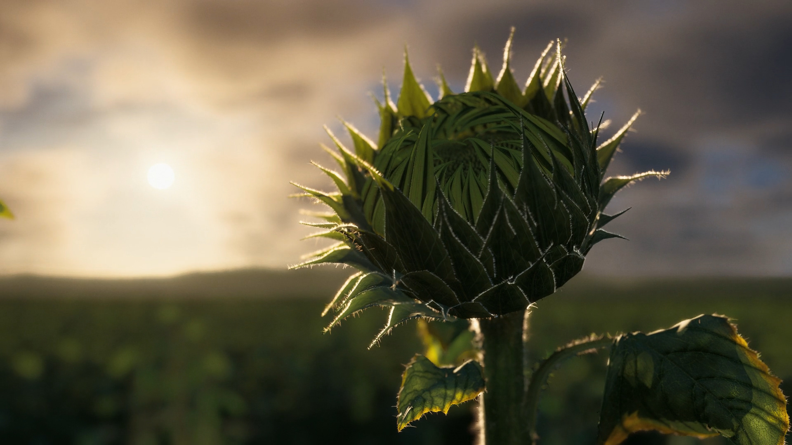
02
Target pictures set the look before anything was built. The owner chose eight for the first version, and eight more were made for the second. Fourteen frames of the film were then judged, each against its own target picture.
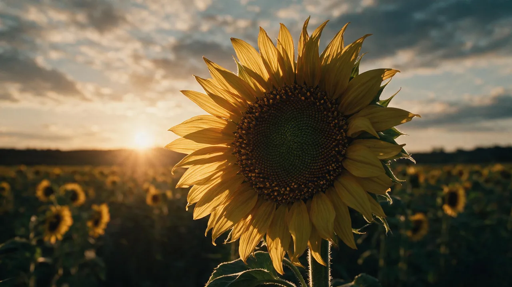
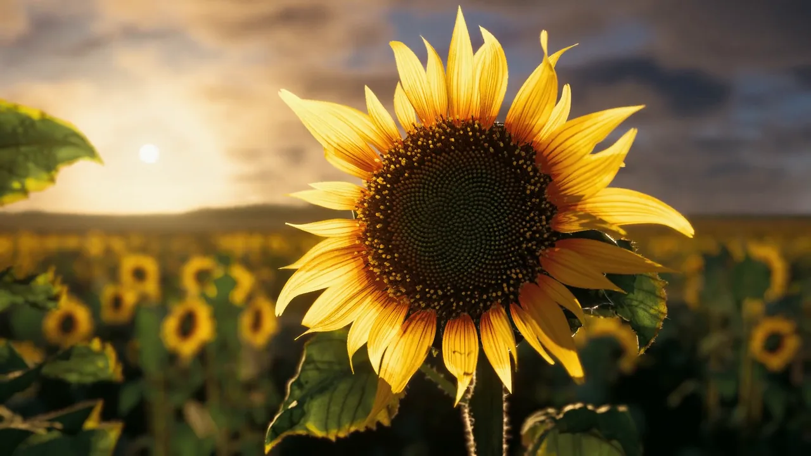
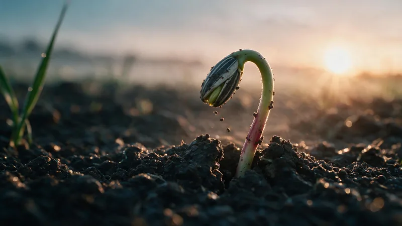


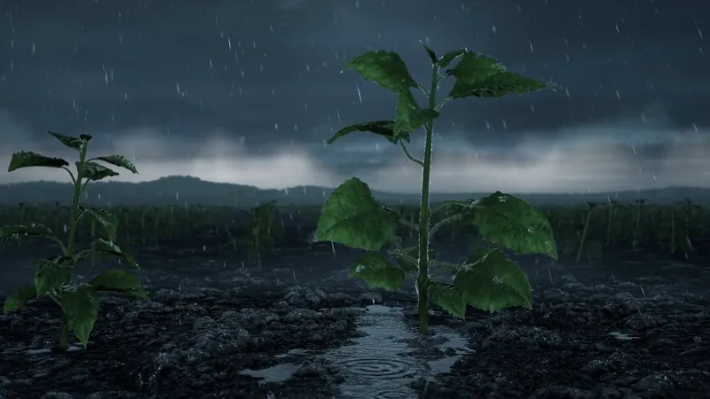


The film does not match its targets exactly. How close it came is in How it was checked, and where it fell short is in Known limits.
03
From a first version of 60 seconds to a film built on its music.


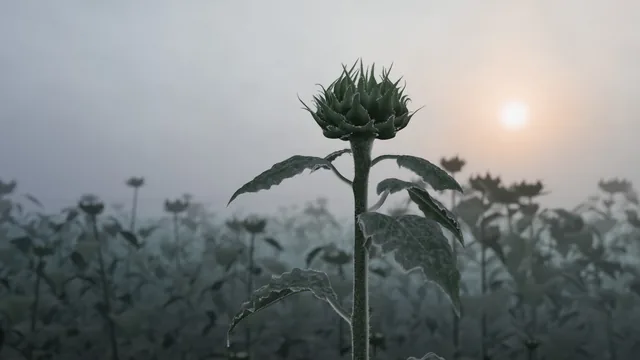
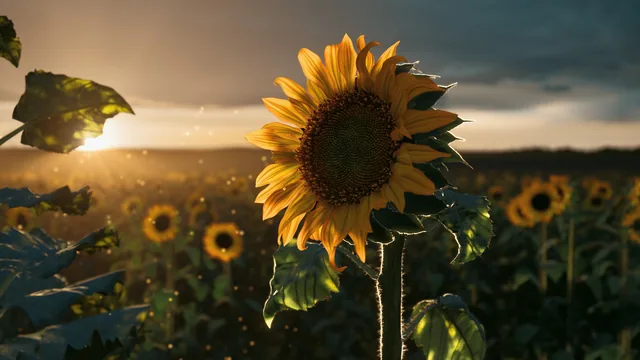


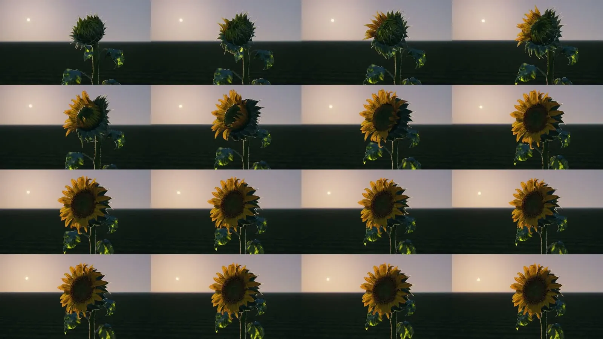
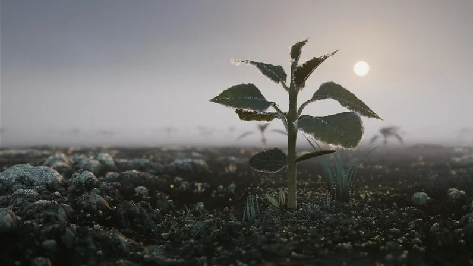
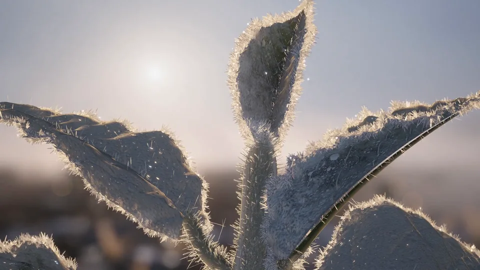

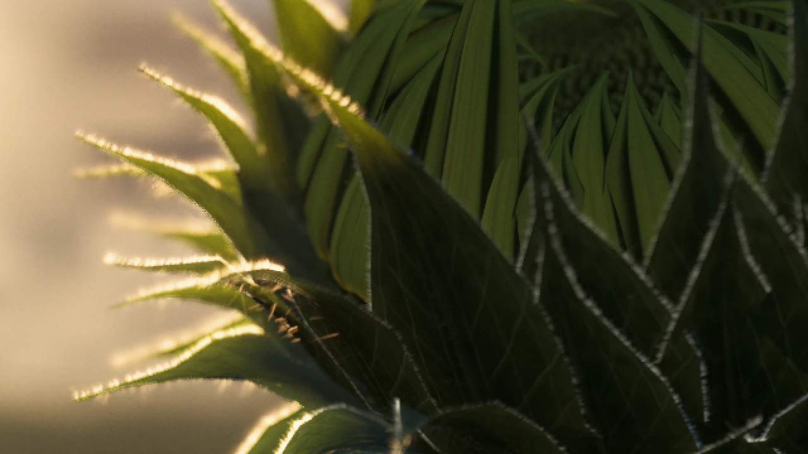
04
Every event is placed as a bar and a beat of the track, at 140 beats a minute, and compiled to frames. All 15 sunrises cross the horizon on a bar line, and the bud begins to open on bar 57, the loudest bar of the track.
In the frost and in the storm, 8 bars each, the plant's clock stands still to the frame while the sky runs on. Frost and rain arrive and leave inside their holds, so the time lapse never shows them.
The film cuts four times, on the downbeats of bars 19, 21, 23 and 25, to three close shots of the frozen seedling and back. Everywhere else the camera is one unbroken move, from the soil to above the field.
Each of the 14 nights lasts 0.86 to 0.96 seconds and the sun goes no deeper than 14 degrees, so a glow always stays on the horizon and the plant is never lost in the dark.
Any frame can be drawn alone and gives the same pixels, so the film was drawn in parts on 12 machines side by side and joined. Nothing is made after loading: every program, texture and buffer exists before frame 0.
Each rule of the film is a command that measures the film and fails when the rule is broken: nothing grows in a hold, no night runs long, every sunrise sits on its bar line, the film cuts only on its four frames.
A sunrise A cut 17The bar a part begins on
The track was mapped to bars and beats before the picture was planned. Bar n begins at 0.883143 + (n - 1) x 1.714286 seconds, and every event of the film is written as a bar and a beat in a cue sheet that is compiled against that map.
Sunrises. There are 15, on bars 1, 5, 9, 13, 17, 27, 29, 31, 43, 45, 47, 49, 51, 53 and 55. In the fast time lapse every sunset falls on beat 3 of the bar before.
Holds. The frost takes bars 17 to 25 and the storm bars 33 to 41. The plant's clock stands on all 822 frames of the two.
Cuts. Frames 952, 1055, 1157 and 1260, which hold the downbeats of bars 19, 21, 23 and 25. They sit on the odd bars, the louder ones, of a passage whose only drum is a soft low hit on bar 21.
The bloom. The camera is half a meter from the head when the bud begins to open on bar 57, and the flower is fully open on bar 61.
| Bar | The music | The picture |
|---|---|---|
| 17 | The loudest bar so far | Sunrise into mist; the plant stops; frost |
| 21 | A soft low hit | Cut to the growing tip; the sun comes through |
| 33 | The loudest bar so far | Lightning; the plant stops; the rain begins |
| 41 | The full entry of the track | The sun breaks through; the plant grows again |
| 57 | The loudest bar of the track | The bud begins to open |
| 73 | The drums drop out | The sun's lower edge stands on the far ridge |
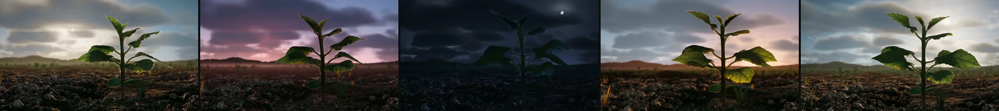
05
Dark soil and one gold. The film carries its color in its light, so everything around it stays quiet: six colors taken from the film's live page, two typefaces and no decoration. A leaf green and a rose mark the labels.
#0d0f0e#14130f#3a362b#ece7db#a8a290#e2b23aFraunces, a soft old style serif, for the title and the headings
Work Sans, a plain grotesque, for the reading text and the labels
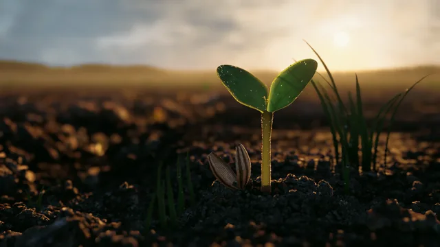

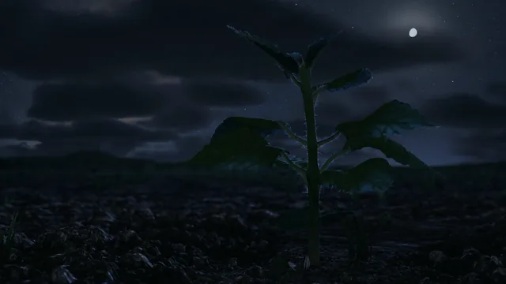
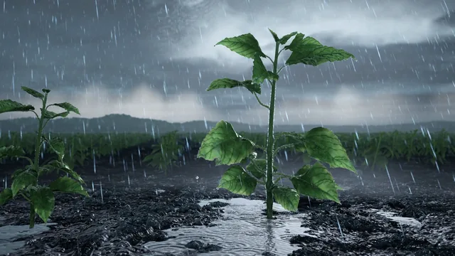
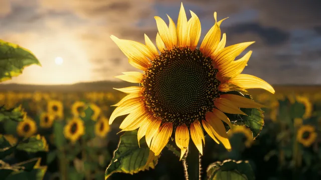
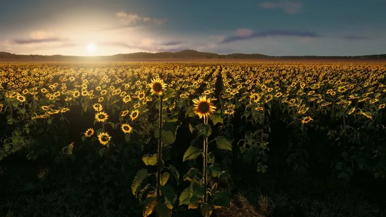
The flower is shot at 35 mm and f/5.6 with the sun in the left of the frame. The frost close shots are stopped down to f/16 and f/32. The shutter is 180 degrees, and focus, glare and the grade belong to the lens, not to the scene.
The plant grows along a skeleton: a stem, 24 leaves, hairs, a bud, 34 ray florets and 1,500 disc florets set out by the golden angle, 137.508 degrees. Its growth has a clock of its own.
The one third party file in the picture is a soil scan under CC0. Everything else is drawn by the code or read from maps made for the film: the plant, the field, the far land, the sky, the rain, the mist and the frost.
06
The film's rules were checked by commands that measure it. It was also judged once, in a record round, by reviewers who had not seen it before. The pass bar of 9 out of 10 was not reached. The owner watched the film with its track and signed it off on 23 November 2026.
| Check | What it measured | Result |
|---|---|---|
| Cues | The cue sheet compiles against the map of the track with 47 cues and 0 mismatches. | Pass |
| Holds | The plant's clock stands on all 822 frames of the two holds. | Pass |
| Cuts | On 1,402 steps from one frame to the next, taken from 1,816 frames spread over the whole film: the four meant cuts and no other. | Pass |
| Made | Nothing is made on the graphics card on any frame after loading. | Pass |
| Pure | 18 frames, each drawn again in two ways: 36 of 36 give the same bytes. | Pass |
| Nights | By the clock, fourteen nights of 0.86 to 0.96 s against a limit of 1.2 s. The proof by the picture was not run. | Pass so far |
| Script | Live play only: the page's own script is over its limit in 11 of 16 measured stretches, 20.1 ms a frame in the mean where a frame has 33.3 ms. The film file is drawn frame by frame, so it is not touched by this. | Fail |
3259d4024c46b2b7c68064463f931e4edc96c45d499e913983cf39eaa3c71c69.07
What the film does not do, said plainly.